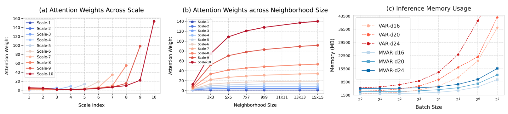
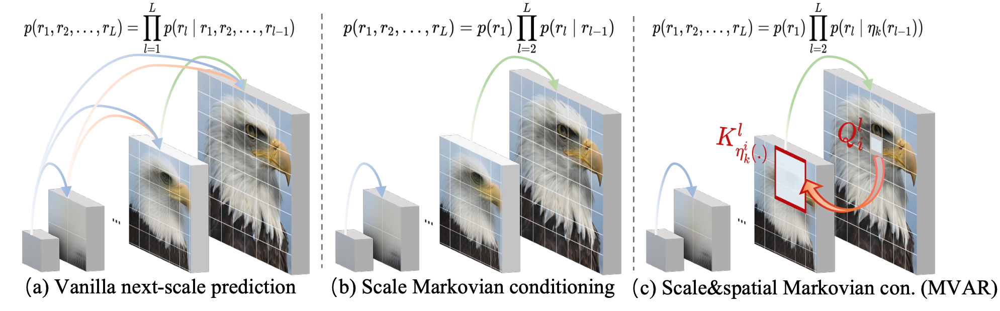
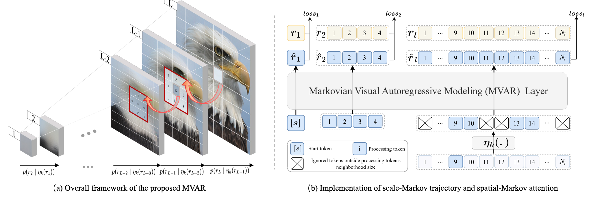
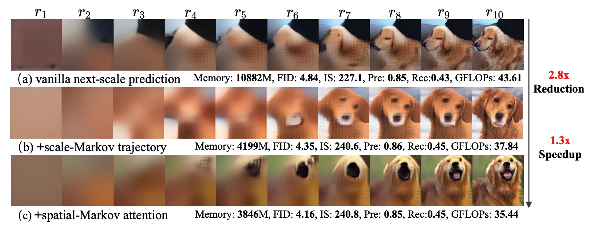
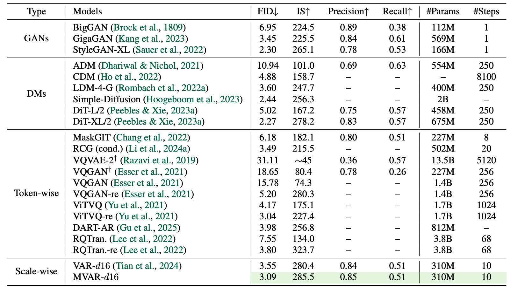
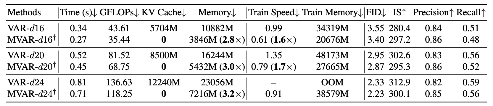

Jinhua Zhang,
Wei Long,
Minghao Han,
Weiyi You,
Shuhang Gu*
University of Electronic Science and Technology of China
*Corresponding Author
🔥 3.0× Memory Efficiency & KV-Cache Free Inference. We propose Markovian Visual AutoRegressive modeling (MVAR), which introduces scale and spatial Markov assumptions to mitigate redundancy in visual generation. By reducing complexity from $O(N^2)$ to $O(Nk)$, MVAR enables parallel training on just eight RTX 4090s and achieves state-of-the-art performance on ImageNet.


Conventional visual autoregressive methods exhibit scale and spatial redundancy by conditioning each scale
on all previous scales and requiring each token to attend to all preceding ones. We propose
MVAR, a novel framework that introduces:
(1) Scale-Markov trajectory: predicting the next scale using only features from the
adjacent preceding scale, enabling parallel training.
(2) Spatial-Markov attention: restricting each token's attention to a localized
neighborhood on adjacent scales, reducing complexity to linear $O(Nk)$ and eliminating the
need for KV cache during inference.

(a) Scale-Markovian Trajectory: Unlike previous methods that depend on all prior scales
($R_1, ..., R_{k-1}$), MVAR assumes that the current scale only depends on its immediate predecessor
($R_{k-1}$). This decoupling allows us to train all scales in parallel rather than sequentially,
significantly lowering GPU memory consumption.
(b) Spatial-Markovian Attention: We restrict the receptive field of each visual token to a
localized $k \times k$ neighborhood at the corresponding position of the adjacent scale. This sparse
attention mechanism avoids the quadratic explosion of global self-attention while effectively capturing
necessary spatial priors.
(c) KV-Cache Free Inference: Due to the Markovian nature of our spatial attention, the
model does not need to store long-term token dependencies. This allows for extremely memory-efficient
sampling without the heavy overhead of Key-Value caches.



[1] Tian K, Jiang Y, Yuan Z, et al. Visual autoregressive modeling: Scalable image generation via next-scale prediction[J]. Advances in neural information processing systems, 2024, 37: 84839-84865.
[2] Hassani A, Walton S, Li J, et al. Neighborhood attention transformer[C]//Proceedings of the IEEE/CVF conference on computer vision and pattern recognition. 2023: 6185-6194.